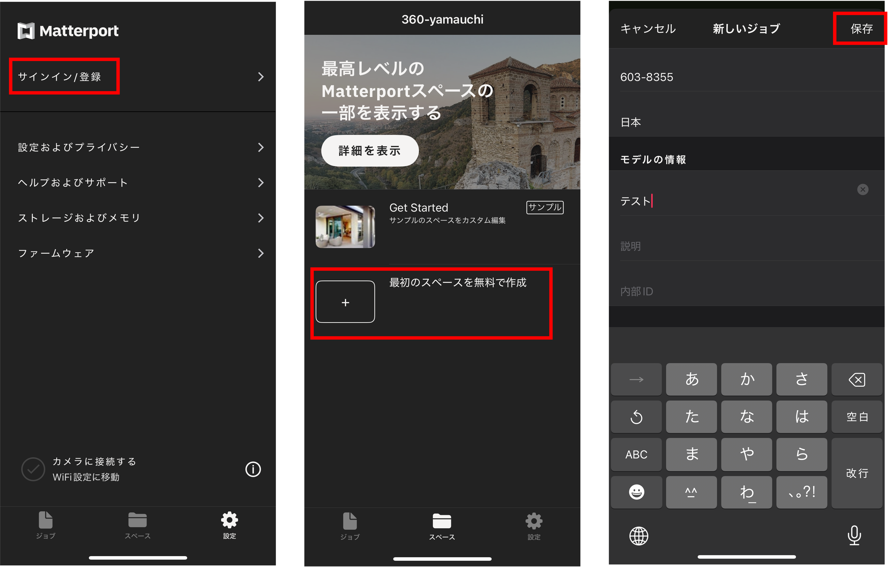

360度画像の表示とバーチャル展示
本資料では、A-Frameを用いた一枚の360度画像の表示とMatter portを用いたVR展示の手順を解説します。
Menu
- A-Frame
- Matterport
A-Frame
A-Frameは、3D/AR/VR コンテンツを作成するためのオープンソースのwebフレームワークです。https://aframe.io/では、A-Frameの適用例が紹介されている。ここでは、A-Frame公式のソースコードを参考に360度画像をWeb上で表示する手法を解説する。
HTMLファイルの作成
まずは、以下のコードをテキストエディタにコピペし、ファイルを360.htmlなどとして保存する。A-Frameの読み込みには、を使用する。
<!DOCTYPE html>
<html>
<head>
<meta charset="utf-8">
<title>360 sample</title>
<meta name="description" content="360° Image - A-Frame">
<script src="https://aframe.io/releases/1.6.0/aframe.min.js"></script>
</head>
<body>
</body>
</html>
360度画像の表示には、GIS-OER WGが公開しているものを使用するため、表示したい画像をGIS-OERのページから探し、任意の画像のSourceアイコンをクリックする。以下では、愛知川の河畔林の画像を使用するため、sourceのURLをコピーする。この画像は、ドローンで撮影した複数枚の写真を合成したものであるが、元画像は精細すぎるため、5376×2688にリサイズしている。
次のコードを
の間に挿入し、上書き保存して、ブラウザで360.htmlを開くと画像が表示される。 <a-scene>
<a-sky src="https://gis-oer.github.io/photos/si/img/si_echigawakahanrin.JPG" rotation="0 0 0"></a-sky>
</a-scene>
rotation="0 0 0"は、オイラー角となる。例えば、rotation="90 0 0"とすると真下を向き、rotation="0 -90 0"とすれば左方向に90度傾く。
A-Frameで360度画像を実装したwebページをスマートフォンで開くと、デフォルトでスマートフォンのジャイロセンサーと連動した表示ができる。iPhoneなどでは、ジャイロセンサーの使用の許可が表示されるため、Allowしてから利用する。
Matterport
Matterportは、空間の3Dスキャン技術を用いてデジタルツインを作成するプラットフォームです。Matterport社が提供する有償のプラットフォームですが、一部の機能は無料で利用できます。以下では、スマートフォンアプリを使用して、撮影した画像を用いてバーチャル展示を想定したアプリを作成していきます。Matterportの使用感や作品は、Matterport Discoverで確認できる。
アカウント作成
Matterportにアクセスし、右上のサインインから以下のようにアカウントを作成する。次に、OSに合わせて、App StoreやGoogle Playからスマホアプリ（Matterport）をインストールする。
スマホアプリで3Dスキャン
Matterportのスマホアプリを開き、サインインする。最初のスペースを無料で作成をタップし、タイトルなど必要な情報を入力して保存を選択する。

オプションで設定が変更できることを確認し、この設定のまま撮影に進む。シャッターボタンを押すと撮影が開始できる。撮影時は、体のみを回転する。カメラは地面に対して垂直にもち、白丸が中央の丸線と重なるようにカメラの向きを変える動きを数回繰り返す。Matterportに対応している360度カメラ（insta 360 x3など）を使用する場合は、通常のように接続すれば、Matterportのアプリで検出できる。
空間を網羅するように同じ作業を数地点で繰り返す。鏡や窓は、画面右のアイコンから設定できるため、必要に応じて対処する。最終的に、アップロードをタップし、自身のアカウントページにモデルを移動する。作成した3Dモデルはマイジョブに保存される。
展示の設定
Webブラウザで、Matterportのマイページにログインする。サインイン後、右上のマイアカウントをクリックする。左のタブからすべてのスペースを選択する。
先ほどあげたスペースの画像などを確認した後、右上の編集をクリックする。
まずは、アプリを起動する際の開始地点を任意の位置するため、アプリ内でその地点に移動し、開始位置を設定を選択する。

次に、下のウィンドウから、瞬時に任意の位置に移動できるように、ハイライトを設定する。
注釈を入れたい箇所を空間内で指定する。アイコンを自由に動かし、注釈の位置を設定した後、テキストを入力する。この際、画像なども埋め込める。追加をクリックすると、注釈がオンになる。全ての編集が完了後に、左上の終了をクリックする。
最後に、再生ボタンを押し、完成したアプリを確認する。